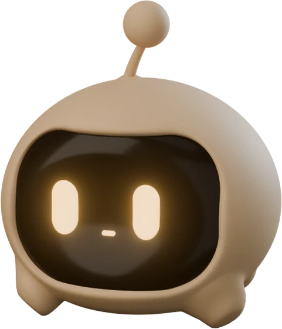
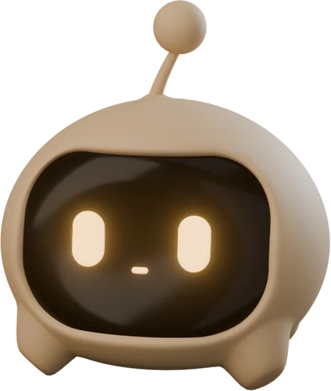

Software Development teacher · builder · Spain

I teach developers the AI-native workflows I use to ship real software — and then I go build it myself.
<h1> · Geist 600 · tracking −5.5% · Server Component

scope.glb · 12 clips · bones: root › hop › squash › look › body › eyes, antenna.1–2
face deviation in every frame of every clip: 0.0000 mm
3.08 MB → 698 KB (meshopt) · the entry screen waits for the first real frame
C · A través de Scope — prototipo esquemático · mueve el ratón · datos reales del repo